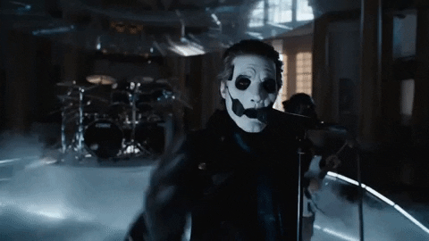

GHOST
(and how they changed my life)
CONTEXT
Ghost is a metal rock band founded in 2006 within the country of Sweden, in the city of Linköping by the
founder and lead singer; Tobias Forge. In the beginning roots of the band, they were (and still are)
highly
criticized for their satanic themes as well as controversial topics being discussed in their music. The
first piece of music that they had released was a three track demo, which eventually led to their first
album being released in 2010. Opus Eponymous, the name of the first album in question is what helped the
band gain their grounding in their sound and lay the foundations for the future of the band. The themes
within the band came from the lead singer and the fellow band member’s love for horror movies, and the
inspiration for the theme being “Scandinavian Metal” themes such as intimidating face paint looks and a
generally “scary” or “intimidating” appearance. Within the community that follows the band also comes
the
lingo with it, the lead singer goes through multiple eras where he plays different characters within a
Ministry called “Papas” that each go by number all the way up to four as of currently. The other
bandmates
that play the instruments are known as “ghouls” which are also masked characters that are usually
nameless
unless named by fans of the band themselves.
IMPORTANCE
The inspiration behind Ghost that the lead singer wanted to push was that a lot of people are either
held
back by religious traditions or their family using religion as an excuse to strictly keep their children
in
line. The band’s message is that you should be your own person even through all the grime that sticks to
you
in life, that you shouldn’t let other people mold your perspective but build your own. Examples of the
band’s messages in their work is to open the audience’s eyes to intimidation that some churches use to
sway
influence through the ages, as the band is highly critical of mainly Christianity and brings it into
question. “You’ll be down on your knees and you’ll cry, cry for absolution.” I think that people now
more
than ever need to learn to just be themselves and not let things like religion, background, or
ridiculous
rules laid in culture of not being allowed to be gay, or transexual, or etc to be considered something
hateful or mean. Due to these messages and youth from ages 16 to even people who are 30 that have a deep
connection with this band like myself, the band has grown more this year than it ever has in it’s entire
career. This growth is also due to the influence that TikTok has on youth, and how it has been used to
spread their music, which became viral as a result.

SYMBOLISM
The symbolism shown in Ghost is a key element in the band itself, as previously mentioned, satanic
imagery
is a big part of how the band was founded. Different points of symbolism would be the use of the
“Grucifix”
which is the symbol that the band uses on a lot of merch and advertising. It is a mockup of a crucifix
that
is designed upside down, then filled with incredible detail and other symbols of “black magic” or
demonology
based shapes. The band uses this imagery in their music and music videos as well to make cryptic
messages
that the fans can participate in to create theories or generate ideas based on them. An example of this
would be in one of the music videos where a woman is shown to be bleeding from her eyes after “Papa
Emeritus
IV” waves his hand over her eyes, the blood symbolizing the release of herself and her very being, sort
of a
twisted version of how Christian churches bless you of your sins so that you could keep going in your
life.
THE CONCERT
As this entire website is supposed to be about something impactful in 2023, I want to talk about my own
main
experience I had with this band that absolutely changed my own perspective. I had gotten interested in
the
band at the beginning of 2023 and fell in love with it. I would have done anything to go to a concert, a
live performance, anything of them if I could as they held great emotional attachment to me as I worked
my
way through my first year of university. My first year was very difficult as I had to deal with my
biological parents who were heavily trying to rip me out of school and literally drag me out. However I
pushed through school and my mental health at the help of this band’s music. Once it was announced in
January/February that there would be a worldwide tour over the summer I was absolutely thrilled. That
is,
until I realized that there were no Canadian dates. So I made a quick decision and decided to plan and
get
tickets for a venue near San Francisco, in a town called Concord for their first performance in their
tour.
I struggled, as I had never flown anywhere in years let alone out of the country. I made friends that
would
meet me there so I had to fly all by myself. That concert showed me truly what friends are capable of
and
how you can find family in any environment, people gave me free stuff at the venue, the show was
incredible
and I cried seven times, the lead singer even pointed right at me and sang the special words “your
beauty
never ever scared me” to someone who never thought for a moment in their life that they were worth
something. This band made me feel worth something.
PERSONAL EXPERIENCE
Linking this concert back to my personal experiences and how it impacted me, I would say that since that
concert I have mentally just been feeling better. To me, that performance was a reward for all of the
hardships I went through that year. All of the tears, all of the pain, the struggle of getting an
assignment
done when you have to worry about the fact that your parents want to kidnap you literally just around
the
corner with a group of goons you don’t even know. When I was at that concert I could tell I wasn’t the
only
one, the people standing beside me, the many people behind me in that stadium, I could hear them crying
through some of the songs, screaming out of joy or other intense emotions. The fans including myself
considered the band like family even though we were never truly close to them in a personal sense. I
made so
many friends throughout my finding of this band, like friends that I would potentially have for life as
I’ve
never met better people. Since the band going viral and reaching the top charts of the metal genre after
the
song “Mary on a Cross” on TikTok, I was never more grateful for that happening as I never would have
been
fully introduced into the band without it. It helped me so much, especially since my own parents were
incredibly abusive to the point that I had to change myself to what they wanted. Ghost made me realize
that
now that I have grown, I have learned that “this is the moment of just letting go.”
FUN FACTS
There’s a ton of fun facts to know! I thought I’d add a fun part to this last content based section of
the
website (besides citations I mean) so here are some facts about the band that I’d like to share so I
encourage other people to check out the band for themselves if they are curious. Even if you don’t like
metal music, they have a good range of content for you to check out instead, such as the Chapter videos
which include lore within the fictional story of Ghost. The first one is that the very first iteration
of
Papa Emeritus was supposed to have two white eyes, only really seen in rare promotional videos, but that
was
decided against due to clashing creative choices. There were more videos supposed to come out of the
songs
within their first album, but due to the band still being fresh and not having a big following they had
to
cancel some of their music video plans due to money and time. These music videos were Elizabeth from
album
one, Opus Eponymus, and the other is Deus in Absentia, which is from their third album (my favorite)
Meliora. Another fact is that many of their songs have been written at the same time, even entire albums
as
Tobias Forge tends to plan ahead a lot. So as a result, he had finished writing both Meliora and
Prequelle
but had to decide which one he would release first.